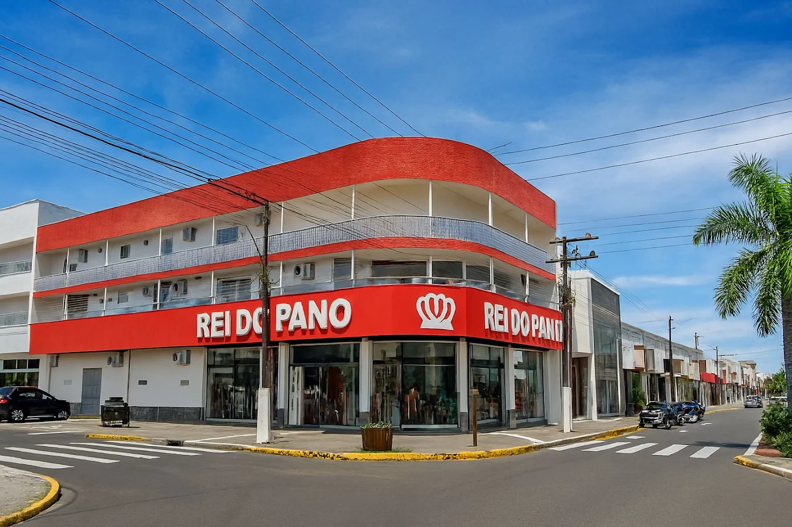
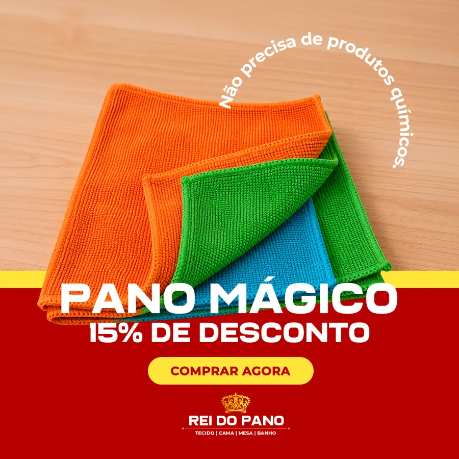

Café com a equipe · Rei do Pano Vilhena
A Porta Nova
A Porta Nova
do Reinado
Quem chama no WhatsApp já entrou na loja.
Outubro · 2026V4 Company · Estruturação Estratégica
Rei do Pano no Google
4,6
★★★★★
Mais de 327 avaliações.
★★★★★
"Conheço a trinta anos, sempre atendimento ótimo."
★★★★★
"O atendimento é de primeira. Seu Luiz é muito atencioso com seus clientes."
Rei do Pano · A Porta Nova do ReinadoV4 Company · Estruturação Estratégica
Pergunta pra vocês
O que faz uma cliente
O que faz uma cliente
voltar aqui?
Desde 21 de setembro
Uma porta nova.
Há mais de 30 anos

Agora também
Rei do Pano · A Porta Nova do ReinadoV4 Company · Estruturação Estratégica
Como ela chega
21h, no sofá.
→
Chegou essa mensagem?É cliente que veio do anúncio.
reidopanoPatrocinado
Enviar mensagem›
C
Cliente
via anúncio
Rei do PanoAnúncio
SimulaçãoV4 Company · Estruturação Estratégica
21/09 a 07/10 · anúncios
50 conversas
Em
17 dias
Cada uma
R$ 6,34
Meta
✓ < R$ 8
Fonte: Gerenciador de Anúncios Meta · R$ 316,93 investidosV4 Company · Estruturação Estratégica
Na loja vocês já conhecem essa
"Olá! Posso ter mais
"Olá! Posso ter mais
informações sobre isso?"
É o "tô só dando uma olhadinha" do WhatsApp.
Um só processo
Da porta pra dentro.
Anúncio
Traz até a porta.
Marketing→
Atendimento
Faz se sentir em casa.
Vocês→
Venda
Acontece.
JuntosRei do Pano · A Porta Nova do ReinadoV4 Company · Estruturação Estratégica
O que vocês já fazem na loja
Quatro movimentos.
01
Receber
"Boa tarde, dona Maria!"
02
Entender
"É pra cortina da sala?"
03
Mostrar
"Pega pra sentir."
04
Combinar
"Separo pra você?"
Rei do Pano · A Porta Nova do ReinadoV4 Company · Estruturação Estratégica
Situação A
A conversa que termina
"Quanto tá
"Quanto tá
o metro?"
C
Cliente
via anúncio
Rei do PanoAnúncio
Quanto tá o metro do tricoline?14:02
Boa tarde! o metro.14:10 ✓✓
visualizado · sem resposta
Conversa simulada · nomes fictíciosV4 Company · Estruturação Estratégica
Situação A
A conversa que continua
Uma pergunta
Uma pergunta
a mais.
→
O recursoResponder e devolver uma pergunta.
C
Cliente
via anúncio
Quanto tá o metro do tricoline?14:02
Boa tarde! Aqui é a Joana, do Rei do Pano. Está o metro. Vai usar pra quê?14:03 ✓✓
Faço avental pra escola. Uns 20 metros, azul-marinho.14:05
Temos sim! Te mando foto agora. Separo os 20 metros no seu nome?14:06 ✓✓
Conversa simulada · nomes fictíciosV4 Company · Estruturação Estratégica
Situação B
A pergunta mais valiosa
"Funciona pelo
"Funciona pelo
WhatsApp?"
Crediário próprio: só o Rei do Pano tem.
R
Rosa
via anúncio
Rei do PanoAnúncio
Funciona pelo WhatsApp? Não queria passar no cartão.21:14
Tem que vir na loja fazer o cadastro.09:40 ✓✓
Ah tá, vou ver.09:52
Conversa simulada · nomes fictíciosV4 Company · Estruturação Estratégica
Situação B
A conversa que continua
Rápido, simples
Rápido, simples
e com próximo passo.
→
Loja cheia?Uma resposta curta agora vale mais que uma perfeita daqui a 3 horas.
R
Rosa
via anúncio
Funciona pelo WhatsApp? Não queria passar no cartão.21:14
Oi, Rosa! Já te explico direitinho, só estou terminando um atendimento.21:16 ✓✓
Pronto! É o nosso crediário próprio: até 6x sem juros, sem mexer no limite do cartão.21:24 ✓✓
O que você está precisando? Já vou separando pra você.21:24 ✓✓
Conversa simulada · nomes fictíciosV4 Company · Estruturação Estratégica
Situação C
A cliente que quer ver
"Vou passar aí."
Sem dia marcado, vira "não passei".
L
Lúcia
via anúncio

Rei do PanoAnúncio
Ainda tem? Vou passar aí pra ver.10:31
Tem sim, pode vir!10:33 ✓✓
ela não veio
Conversa simulada · nomes fictíciosV4 Company · Estruturação Estratégica
Situação C
A conversa que continua
Mostrar antes.
Mostrar antes.
Combinar a visita.
L
Lúcia
via anúncio
Ainda tem? Vou passar aí pra ver.10:31
Tem sim! Olha ele aqui.10:33 ✓✓
Separo no seu nome? Que dia fica bom?10:33 ✓✓
Sábado de manhã!10:35
Combinado! Pergunta pela Joana.10:35 ✓✓
Conversa simulada · nomes fictíciosV4 Company · Estruturação Estratégica
A cliente que não comprou hoje
"Vou pensar."
Ela vai comprar. Onde?
Silêncio
Silêncio
não é "não".
A cliente compra
3 a 4x por ano
Black Friday e Natal chegando
C
Cida
retomar com um motivo
Oi, Cida! Separei aquele jogo de cama. Fica guardado até sábado, tudo bem?no dia seguinte
Oi, Cida! Chegou tecido novo de cortina e lembrei de você. Te mando fotos?quando chega novidade
Oi, Cida! Muita gente já está renovando o enxoval pro Natal. Quer ver as novidades?perto de data forte
Mensagens simuladas · nomes fictíciosV4 Company · Estruturação Estratégica
WhatsApp Business
4 etiquetas.
Anúncioveio do anúncio
Retomar"vou pensar" ou sumiu
Vem na lojavisita combinada
Comprouvirou venda
WhatsApp Business
Conversas · toque para etiquetar
R
Rosa
Olá! Posso ter mais informações…
C
Cida
Vou pensar e te falo
L
Lúcia
Sábado de manhã!
M
Marta
Amei o jogo de toalhas!
Simulação · nomes fictíciosV4 Company · Estruturação Estratégica
Do mesmo lado
Só vocês sabem
Só vocês sabem
o final da história.
Anúncio
Traz a conversa.
→
Conversa
Vocês atendem.
→
Etiqueta
Conta o final.
→
Anúncio melhor
Mais cliente certa.
Rei do Pano · A Porta Nova do ReinadoV4 Company · Estruturação Estratégica
A partir de amanhã
3 combinados.
01
Responder logo
Nem que seja um "já te atendo".
02
Uma pergunta ou um próximo passo
Em toda resposta.
03
Etiqueta
Em toda conversa do anúncio.
Rei do Pano · A Porta Nova do ReinadoV4 Company · Estruturação Estratégica
O anúncio abre a porta.
Vocês fazem a cliente
se sentir em casa.
A mesma loja de sempre, com uma porta a mais. Obrigado!
Rei do Pano · O Novo ReinadoV4 Company · Estruturação Estratégica